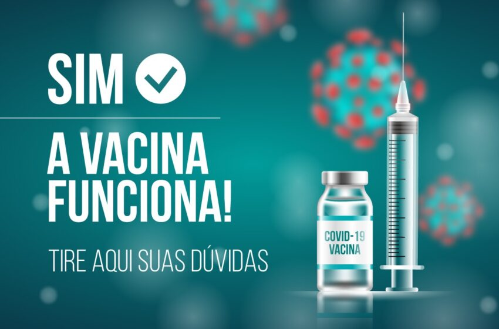

Produtos
A SoulLife possui um portfólio com mais de 100 produtos para diversas especialidades, como
Cardiologia, Ginecologia, Dermatologia, Gastroenterologia, Reumatologia, Ortopedia e Pediatria.
Com
foco em inovação, por meio de pesquisa, desenvolvimento e produção de medicamentos, a SoulLife
busca promover saúde e bem-estar a seus pacientes.

VACINA SOULLIFE & BUTANTAN
A SoulLife em parceria com o Instituto Butantan produziram a vacina contra o Covid-19
produzida com vírus inativados do novo coronavírus, ou seja, não oferece nenhum risco de
infecção pela doença. O vírus é cultivado para se multiplicar e, depois, é inativado por
meio de calor ou produto químico. Essa tecnologia é uma especialidade do Butantan e é
usada
em outras vacinas, como a da gripe.